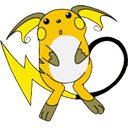
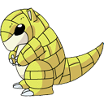
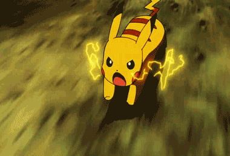

尽管它确切来说是四足动物，更多时候它是站着并用两只后脚走路 。住在森林中的它们通常以树果为食。它们用小小的电击把树果从树上打下来，这样就不必爬树，还可以顺带将其烤熟。
 野生的皮卡丘大多群体行动，很少固定在一个地方。皮卡丘的听力很好，这得益于它的大耳朵。许多家养的皮卡丘可以理解并演绎出人类的话，甚至比大多数宠物狗做得更好。
皮卡丘是受人欢迎的宠物。要和它保持好关系并不难，带着它进行一些小小的健康活动就可以。不过，定期放掉它脸颊上的电力也是很重要的。皮卡丘独有的能力是在紧张时通过它脸上的电气袋释放电气。这个电能可用各种方式操纵，常被用在对战中，不过有时它也被皮卡丘用来烤树果。皮卡丘由于把电能储存在体内，经常需要放电，就算是毫无目的的。否则它可能会被麻痹，甚至死亡。皮卡丘通过尾巴来像避雷针一样安全地释放不需要的能量。烧焦的草丛是皮卡丘居住在这里的标志，这个标志是它的电击造成的。
